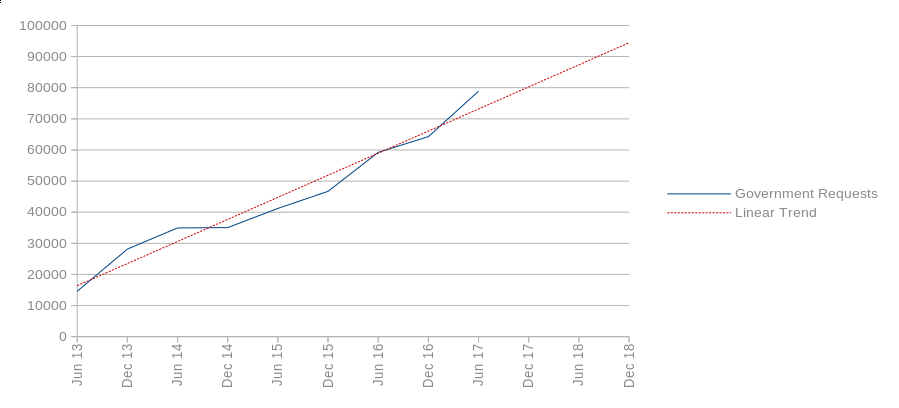
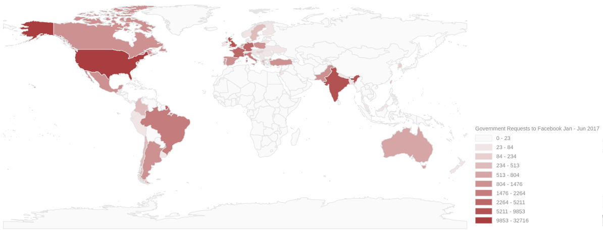

In the wake of the recent Cambridge Analytica privacy issue in the news, I have decided to #DeleteFacebook. The thinkMoult blog is still represented via the public Facebook thinkMoult page, but my private profile has been cleared out. Given that Facebook is increasingly sharing our profile data (as shown in the graph below produced from Facebook's very own reports), clearing out the account makes a difference, albeit a small one. I also thought it would be good to share a few things I've learned about Facebook in the past couple of weeks, related to my new years resolution to improve digital security.

(Note: you can compare with Google's data disclosure over time)
First, I'd like to commend Facebook's behaviour so far. Being the world's largest social network probably isn't easy, and Facebook has made initiatives to increase its transparency. For instance, they issue a transparency report, and they use the Signal secure messaging protocol for a secure chat mode in FB Messenger. It is also possible to download your Facebook data, and place restrictions on data sharing with apps and advertisers. Their data retention policy also seems to suggest that if you delete data from your account, it's also gone from their servers.
However, of course, this isn't the complete picture. Take for instance the world map of Facebook government requests in the first half of 2017 from their very own transparency report.

The map (split into Jenks natural breaks) shows that US government requests are miles ahead of the rest of the world in asking Facebook for information. Most governments from other countries don't play any part in this.
However, the map is incomplete. It is also not possible to see data shared through indirect means. Developers can easily create apps that integrate with Facebook. Whether you answer a survey through Facebook or use Facebook to log into another service, they can have varying degrees of access to your profile and friend information. This may also occur without your explicit consent. For instance, my meager Facebook usage has resulted in my details being shared with 138 companies. This is not to mention that Facebook trackers are on 25% of websites online. Oh, and let's just forget Facebook altogether: Google trackers are on 75% of websites online (and yes, also on my blog). Basically, you are always tracked online, from the way you move your mouse to how you feel, which can be combined through machine learning to indirectly define character profiles, interests, and demographics.
Like most technologies, this data can be used for very positive things and very negative things alike. The negative side comes when services we assume are private social platforms are actually not. This data may be used to influence political elections, or help China rank all citizens, or rebrand political news as fake news in Malaysia, or even be accessed by any law enforcement agency around the world without notification or warrant - it doesn't matter - people misunderstand that posting on Facebook is not a private matter: it is public.
Deleting Facebook is one step of many to promote the idea that just as there are public outlets for expression online (blogs, Twitter, Facebook) there equally are private outlets (Signal, Tor, ProtonMail). Of course, there is nothing inherently wrong with either outlet, but we should recognise these differences in privacy and know when to choose between them.
For more reading, see why digital rights matters, even though you don't think it impacts you, and how you can improve human rights by changing your messaging app.